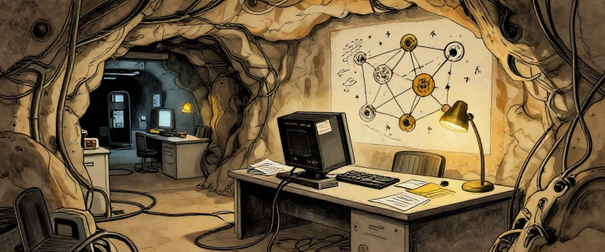
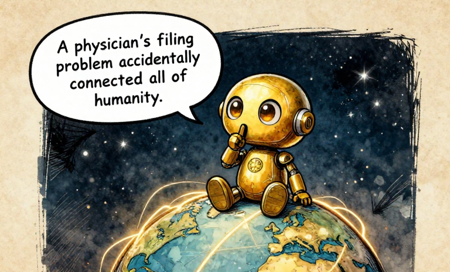
A physicist's filing problem accidentally connected all of humanity.In 1989, the internet already existed. It had been around since the 1970s — a network of networks, built on TCP/IP (from Issue 4), connecting universities and research labs worldwide. You could send email via SMTP. You could transfer files via FTP. You could log into remote computers via Telnet. You could discuss ideas on Usenet newsgroups.
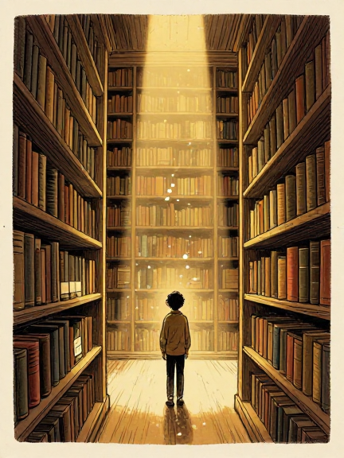
But finding information on it was another story. Imagine a vast library where every book exists but has no cover, the shelves have no labels, and there is no card catalog. You could navigate if you knew exactly where you were going, but browsing was nearly impossible. The highway worked. What was missing was a way to publish, link, and browse documents that anyone could read.
None of this connectivity would have been possible without the invisible work of engineers like Radia Perlman, whose Spanning Tree Protocol (STP), developed in the 1980s, allowed network bridges to connect thousands of computers without creating catastrophic routing loops. Without STP, the scalable networks that carried the internet's traffic would have collapsed under their own complexity. Perlman, sometimes called "Mother of the Internet," built the scaffolding that held the connected world together — yet her name rarely appears in popular histories.
Then a British physicist at a Swiss research lab wrote a memo. His supervisor, Mike Sendall, scribbled "Vague but exciting..." on the cover page. And within five years, the world would be unrecognizable.
This is the story of the 1990s and 2000s — the era when computers stopped being islands and became a single, connected world. An era built not by corporations or governments, but by people who believed the most powerful thing you can do with an idea is give it away. But "giving it away" was easier for some than others. The connected world would be shaped by who had access — and who did not.
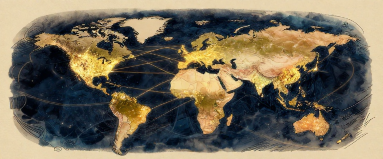
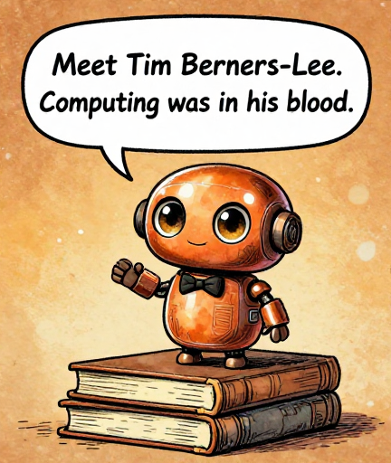
Meet Tim Berners-Lee. Computing was in his blood.Tim Berners-Lee was not trying to build a publishing empire or a social network. He had a practical problem: CERN employed over 10,000 researchers, using dozens of different computer systems, and they could not easily share documents with each other. Information was trapped in silos.
Born in London in 1955, both his parents worked on the Ferranti Mark 1, one of the earliest commercial computers. He studied physics at Oxford, then ended up at CERN, the European particle physics laboratory in Geneva.
On March 12, 1989, Berners-Lee submitted a proposal titled "Information Management: A Proposal." Sendall's response — "Vague but exciting..." — was enough to let the project proceed, though CERN never made it a priority. Berners-Lee essentially built the World Wide Web in his spare time, with help from colleague Robert Cailliau, who contributed to the proposal and championed the project within CERN.
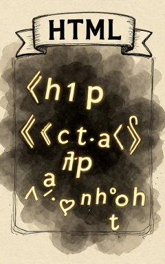
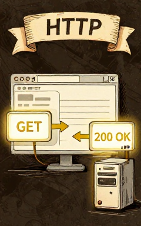
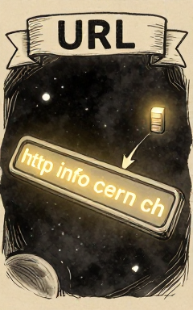
By late 1990, working on a NeXT computer, Berners-Lee had created three inventions that became the foundation of the web:
HTML (HyperText Markup Language) — simple tags like <h1> and <a href="..."> that tell a browser what each piece of content is. The first version had only 18 tags. Its simplicity was the point.
HTTP (HyperText Transfer Protocol) — your browser sends a request, the server sends a response. Clean, simple, stateless.
URLs (Uniform Resource Locators) — addresses for anything on the web, like a postal address that tells your browser where to find a specific page, anywhere in the world.
The Web's Foundation (1990): Three inventions that became the World Wide Web
The World Wide Web is not the internet. The internet is the highway system — the physical network of cables and protocols (TCP/IP) built in the 1970s and 1980s. The web is what was built on top of it: a system of linked pages, accessible through browsers, using HTML, HTTP, and URLs. The internet carries the data. The web makes it readable.
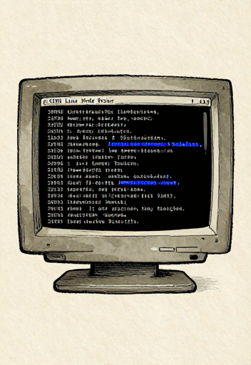
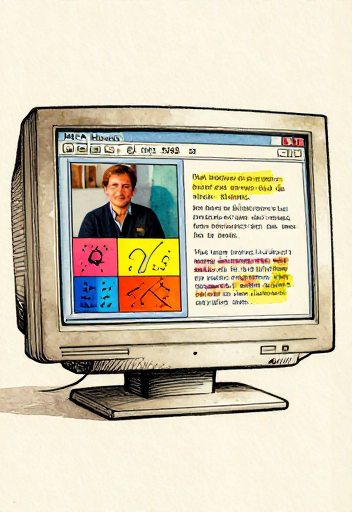
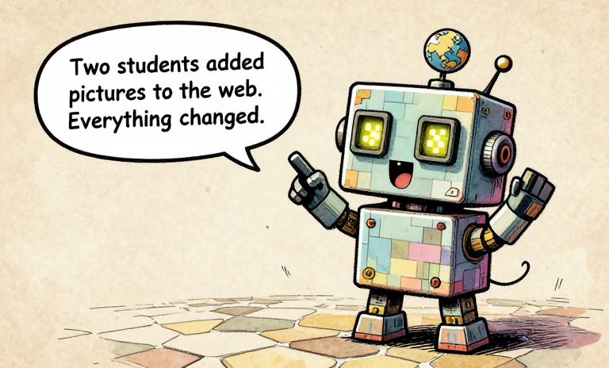
Two students added pictures to the web. Everything changed.The first web browsers were functional but austere. They showed text and hyperlinks. Images opened in separate windows. Using the web felt like reading a phone book.
Then, in January 1993, Marc Andreessen and Eric Bina at NCSA at the University of Illinois released Mosaic. Andreessen, a 22-year-old undergrad earning $6.85 an hour, handled the interface and vision. Bina built the core rendering engine. Together, they created the browser that made inline images mainstream.
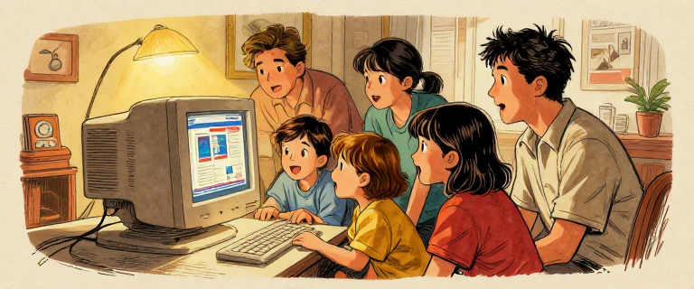
Mosaic did not invent the web. But it made the web usable. Suddenly, ordinary people — not just researchers — could browse. And suddenly, anyone with basic HTML knowledge could publish. A personal website cost nothing. You did not need a printing press, a TV station, or a newspaper. You needed a text editor and something to say.
But none of this would have happened without a decision made four months later. On April 30, 1993, CERN officially released the World Wide Web software into the public domain — free, for everyone, forever. No licensing fees. No royalties. No corporate control.
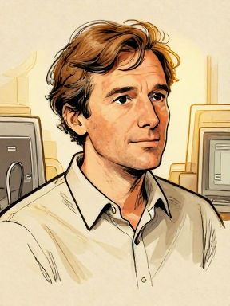
Berners-Lee later reflected: "Had the technology been proprietary, and in my total control, it would probably not have taken off. You can't propose that something be a universal space and at the same time keep control of it."
He never became wealthy from his invention. He chose to give it away.
Andreessen and Bina received little credit or reward from NCSA. Andreessen left and co-founded Netscape Communications with Jim Clark in April 1994. Netscape Navigator polished the Mosaic concept into a commercial product. And on August 9, 1995, Netscape went public.
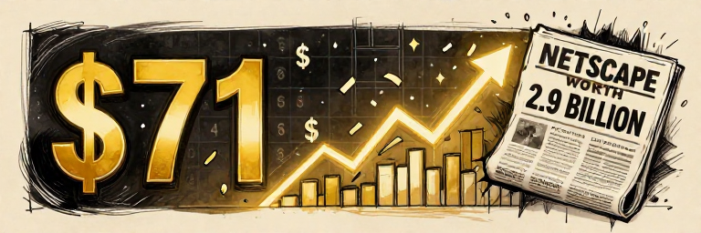
Shares were priced at $28. They opened at $71. A 16-month-old company was worth $2.9 billion by the end of the day. The starting gun of the dot-com boom had fired.
Think About It: Tim Berners-Lee gave away the web for free. He could have patented it, licensed it, controlled it. He chose not to. But who got to participate in the "connected world"? In the 1990s, internet access required a computer, a phone line, and monthly fees — creating a "digital divide" along lines of wealth, geography, race, and gender. By 2000, fewer than 7% of the world's population was online. This gap persists today.
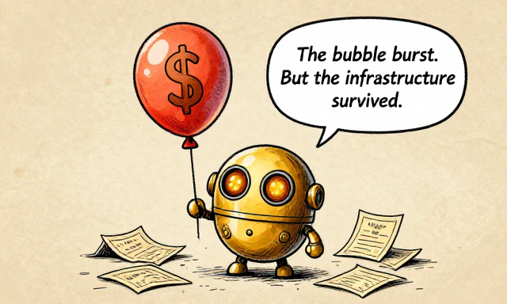
The bubble burst. But the infrastructure survived.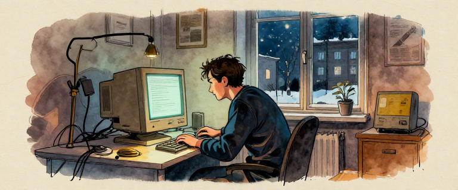
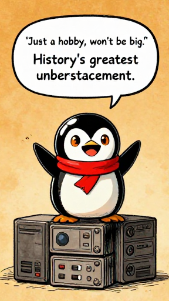
'Just a hobby, won't be big.' History's greatest understatement.Linus Torvalds was born on December 28, 1969, in Helsinki, Finland, into the Swedish-speaking minority. He was a quiet kid who preferred computers to people. In January 1991, he bought a 386 PC and started tinkering with MINIX, a small Unix-like teaching operating system created by professor Andrew Tanenbaum.
Torvalds was frustrated by MINIX's limitations. He wanted a real operating system — one that could run on his cheap PC, take advantage of its hardware, and let him do what he wanted. So he started writing one himself.
The famous Usenet post that launched Linux
He was comparing his project to GNU — Richard Stallman's ambitious, coordinated effort from Issue 4. By that measure, he was being completely realistic. A student's side project would not rival a multi-year effort with institutional backing. He was not making a prediction about Linux's future — he was being honest about where it stood that day.
By what actually happened, he was spectacularly wrong. Linux would eventually power more devices than any operating system in history.
Linux: from a student's hobby to the world's most-used operating system
Linux version 0.01 was released on September 17, 1991. It was rough. But something remarkable happened: people started contributing. Developers around the world downloaded the code, found bugs, wrote fixes, and sent patches back. The internet made it possible for a global community to collaborate on a single piece of software.
Torvalds had originally released Linux under a license that prohibited commercial use. In February 1992, he switched to the GNU General Public License (GPL) version 2. This was the turning point. The GPL guaranteed that Linux would remain free and open, and it invited the entire world to contribute.
Linux proved that a global community of volunteers, coordinating over the internet, could build software that rivaled — and eventually surpassed — anything produced by the wealthiest corporations on Earth. It was not just a technical achievement. It was a new way of working.
The bazaar model works like Unix pipes: small contributions from many people, combined. Try building pipelines yourself -- chain small tools together and watch data flow through each stage.
Open Unix Pipe Playground →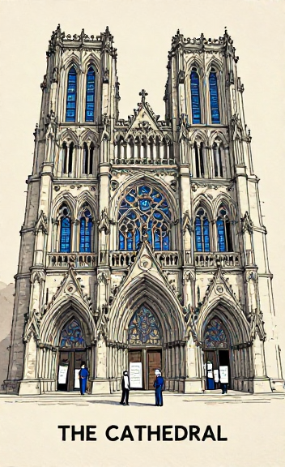
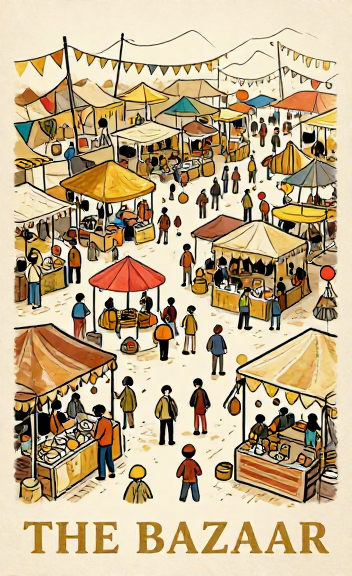
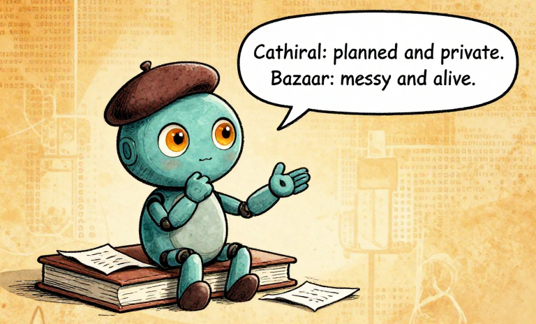
Cathedral: planned and private. Bazaar: messy and alive.In May 1997, Eric S. Raymond presented an essay called "The Cathedral and the Bazaar" at the Linux Kongress. It would become the foundational text of the open-source movement.
Two models of software development
The Cathedral model: a small, closed team designs the software carefully, releases it when it is ready, and controls every change. This is how most commercial software was built.
The Bazaar model: release early, release often, share everything, let anyone contribute. Accept that the process will be messy. Trust that the community will find and fix problems faster than any closed team could.
Raymond's most famous line: "Given enough eyeballs, all bugs are shallow." He called this "Linus's Law." If thousands of people can see the code, every bug becomes obvious to someone.
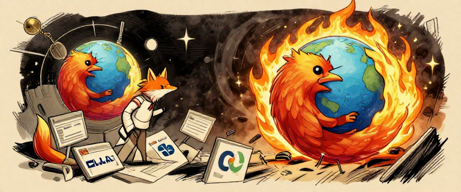
The essay hit the software industry like a thunderbolt. In January 1998, Netscape — losing the Browser Wars to Microsoft — released its source code. Raymond's essay was the direct inspiration. That release became the Mozilla project, and it was Mitchell Baker — a lawyer and technologist — who shepherded it from a messy code dump into a real organization. Baker became CEO of the Mozilla Foundation and led the creation of Firefox, proving that the bazaar model could build world-class consumer software. When Firefox launched in 2004, it broke Internet Explorer's near-monopoly.
In February 1998, Raymond and Bruce Perens founded the Open Source Initiative (OSI). They chose "open source" instead of Stallman's "free software." Stallman emphasized philosophical freedom — "free as in freedom, not free as in beer." Raymond emphasized practical superiority — open development simply produces better results.
Stallman was not pleased. He saw "open source" as a dilution of freedom principles. This split — freedom versus pragmatism — persists to this day. But both sides agreed: sharing code is better than hoarding it.
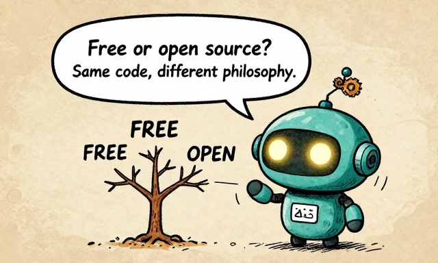
Free or open source? Same code, different philosophy.There is a question that rarely gets asked: who can afford to contribute? Writing free software requires leisure time, education, and a computer with internet access. The open-source movement was overwhelmingly built by people in wealthy countries with the financial safety nets to work for free. "Open to all" did not mean "accessible to all." The bazaar had no entry fee, but getting to the bazaar was not free.
Big Idea: Open source is more than a license — it is a philosophy. The radical claim: transparency and collaboration produce better software than secrecy and control. But open source also raises questions about labor: when code is "free," who pays the people who write it? The community garden feeds many, but the gardeners still need to eat.
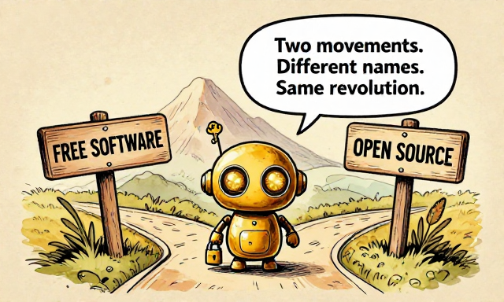
Two movements. Different names. Same revolution.Think About It: Open source means the "recipe" is published, not just the "meal." Science publishes methods so others can replicate and improve them. What if medicine or education published their "recipes" too? Where would openness help, and where might it cause problems?
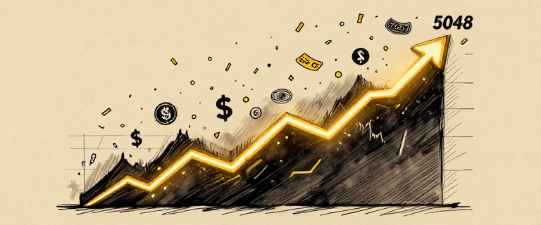
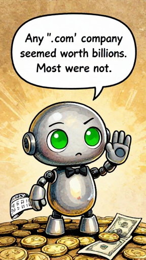
Any '.com' company seemed worth billions. Most were not.Netscape's explosive IPO on August 9, 1995, sent a signal to Wall Street: the internet was where the money was. A 16-month-old company was worth $2.9 billion. Marc Andreessen, 24 years old, appeared barefoot on the cover of Time magazine, sitting on a golden throne.
What followed was a gold rush. Venture capital flooded into any startup with ".com" in its name. Business plans were optional. Revenue was irrelevant. The metric that mattered was "eyeballs" — how many people visited your website.
On December 5, 1996, Federal Reserve Chairman Alan Greenspan warned of "irrational exuberance" in the markets. Nobody listened.
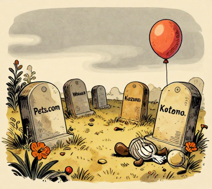
Pets.com spent $11.8 million on advertising while generating only $619,000 in revenue. It lasted 268 days from IPO to liquidation.
Webvan raised $375 million and filed for bankruptcy in 2001.
Kozmo.com burned through $280 million delivering snacks by bicycle.
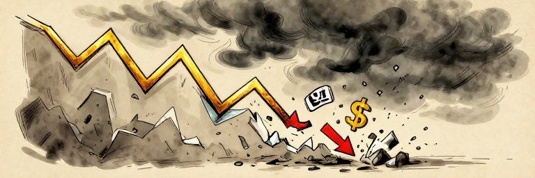
On March 10, 2000, the NASDAQ Composite peaked at 5,048.62. Then it fell. And kept falling. By October 2002, it had dropped to approximately 1,114 — a decline of roughly 78%. Trillions of dollars in market value evaporated. Companies vanished overnight. Thousands of workers lost their jobs.
The Dot-Com Bubble: from irrational exuberance to a 78% crash
But here is what the simple "bubble" story misses: the crash destroyed speculative money, not the technology. Internet usage continued to rise throughout the bust. The fiber-optic cables, data centers, and networking infrastructure built during the boom remained — and actually made the next wave of innovation cheaper. Amazon's stock fell 93% — from $107 to $7 — but the company survived and eventually became one of the most valuable in the world.
The dot-com crash taught a brutal lesson: technology that changes the world and companies that make money are two different things. The internet was revolutionary. Most dot-com business plans were not. The infrastructure survived. The speculation did not. And the next generation of internet companies would be built on the rubble — literally inheriting the fiber-optic cables and data centers that the boom had overbuilt.
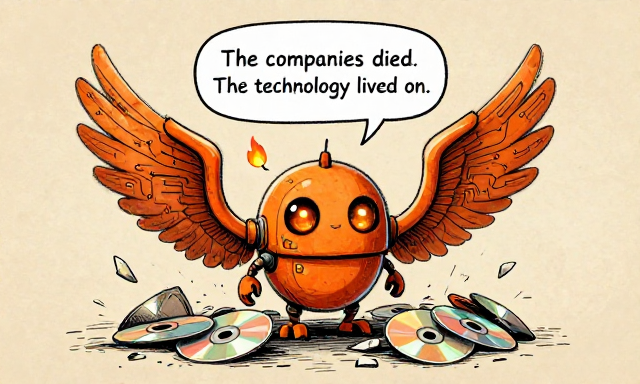
The companies died. The technology lived on.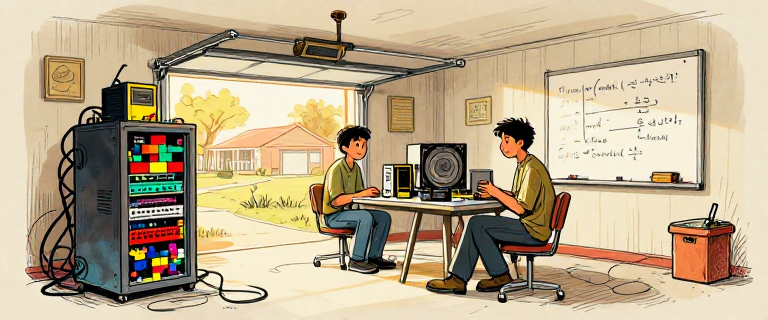
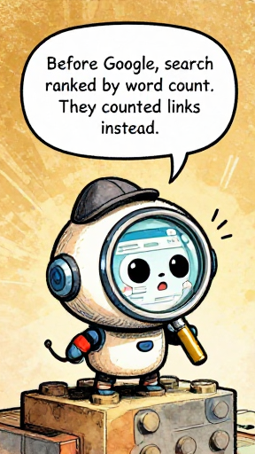
Before Google, search ranked by word count. They counted links instead.Larry Page (born 1973) and Sergey Brin (born 1973 in Moscow — his family emigrated from the Soviet Union when he was six) met as Stanford PhD students in 1995. By most accounts, they disliked each other at first. They argued about nearly everything.
But they agreed on one thing: web search was terrible.
Existing search engines like AltaVista, Lycos, and Yahoo! ranked pages primarily by keyword frequency. A page that mentioned "dog" fifty times ranked higher than a page mentioned once, even if the second page was written by a veterinarian.
Google's PageRank: treating links as votes of confidence
Page and Brin's research project, originally called "BackRub," produced PageRank — named after Larry Page, not "web pages." The core insight: treat every link as a vote. If Page A links to Page B, that is a vote of confidence. But not all votes are equal — a link from a page that itself has many links counts more. Like academic citations: a paper cited by a thousand others is probably more important than one cited by two.
PageRank is recursive: importance depends on importance, calculated iteratively until it stabilizes. Mathematically, it is like imagining a random surfer clicking links endlessly — where they land most often is the most important page.
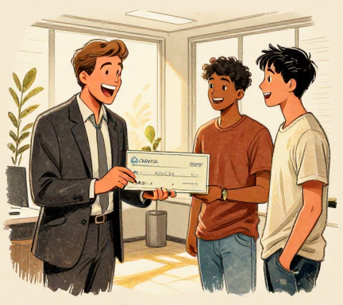
When Page and Brin demonstrated the technology to Andy Bechtolsheim, co-founder of Sun Microsystems, he immediately wrote a check for $100,000 to "Google Inc." — a company that did not yet legally exist. They had to incorporate before they could cash it.
Google was officially incorporated on September 4, 1998, in a garage owned by Susan Wojcicki in Menlo Park. The name was a play on "googol" — the number 1 followed by 100 zeros. Its stated mission: "to organize the world's information and make it universally accessible and useful."
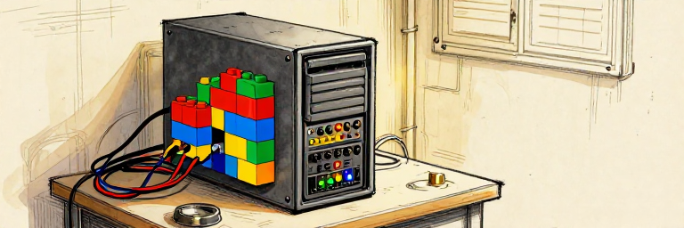
Google's breakthrough was not building a search engine — many existed before it. The breakthrough was realizing that the structure of the web itself contains information about what matters. Links are votes. The web is not just content; it is a vast network of human judgment about what is important.
The first Google server was housed in a case made of Lego bricks. Cash-strapped students, building the future from spare parts. Within a decade, Google would become one of the most powerful companies on Earth — its mission to "organize" information would evolve into something more complex: monetizing the attention of the people searching for it.
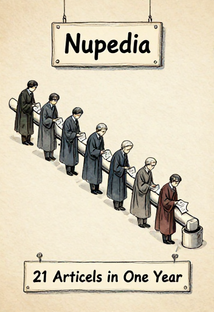
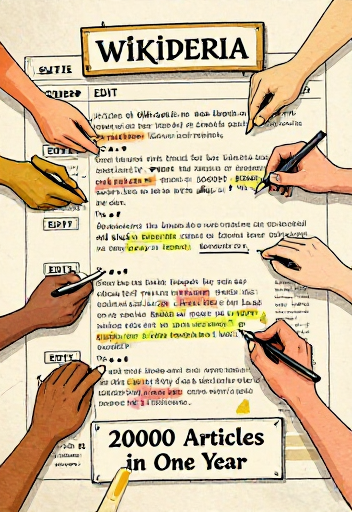
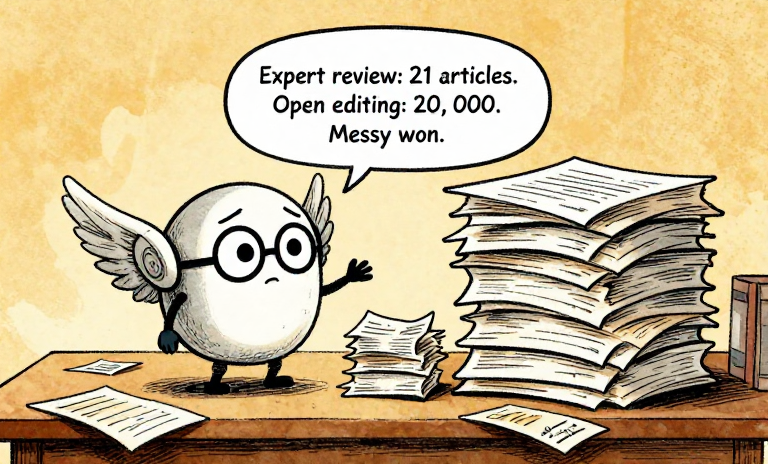
Expert review: 21 articles. Open editing: 20,000. Messy won.Jimmy Wales (born August 7, 1966) was an unlikely encyclopedist. He was a former options trader influenced by economist Friedrich Hayek's idea that useful knowledge is dispersed among many individuals and cannot be centrally gathered. This philosophical conviction would lead him to one of the most consequential experiments in the history of information.
In March 2000, Wales founded Nupedia — a free online encyclopedia written by experts, subject to a rigorous seven-step peer review process. It was meant to be the open-source Encyclopedia Britannica.
The problem: it was painfully slow. In its first year, Nupedia produced exactly 21 completed articles.
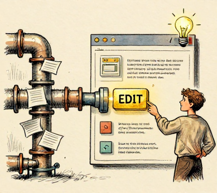
Then Larry Sanger, Nupedia's editor-in-chief, proposed adding a wiki — a website anyone can edit, invented by Ward Cunningham in 1994-1995 — as a feeder system for Nupedia.
On January 15, 2001, Wikipedia launched. It was supposed to be the rough-draft stage. Instead, it immediately eclipsed Nupedia entirely. Wikipedia reached 20,000 articles in its first year. By January 2003, it had 100,000 English articles.
Nupedia vs. Wikipedia: expert review vs. open editing
The concept was heretical. Traditional encyclopedia publishing was a cathedral: slow, expert-driven, authoritative. Wikipedia was the ultimate bazaar: anyone could edit any article, at any time, with no credentials required. A 2005 study in Nature found Wikipedia's accuracy roughly comparable to Encyclopedia Britannica for scientific topics — though Britannica called the study "fatally flawed," and it only covered science, not the history, politics, and biographical content where bias is most problematic.
Wikipedia remains a nonprofit, funded by donations and built by volunteers. But "anyone can edit" does not mean everyone does — Wikipedia's editor base skews heavily male, Western, and technically literate. A 2011 survey found that fewer than 13% of Wikipedia editors were women. Articles about notable women are shorter, more likely to be flagged for deletion, and less likely to exist in the first place. The openness is real. The equality is still a work in progress.
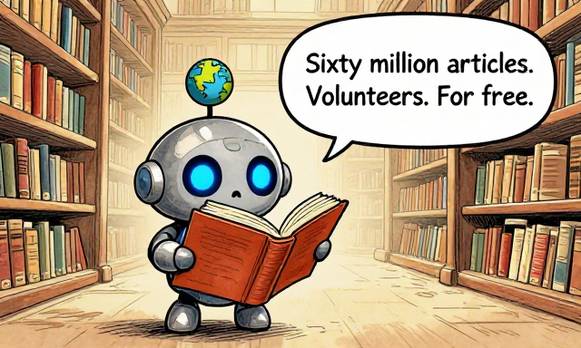
Sixty million articles. Volunteers. For free.Big Idea: Wikipedia proved that a crowd of non-experts, given the right tools, could produce a knowledge resource that rivaled centuries-old institutions. But it also revealed the limits of openness: who shows up to edit shapes what gets written. An encyclopedia "anyone" can edit is still shaped by the demographics of who actually does.
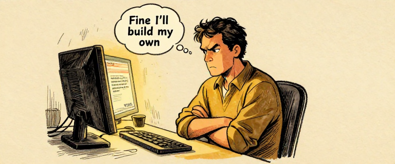
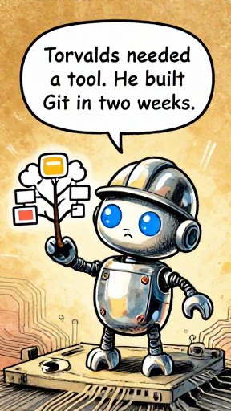
Torvalds needed a tool. He built Git in two weeks.The Linux kernel is one of the most complex collaborative software projects in history — by 2020, over 20,000 developers had contributed. Coordinating that many people editing the same codebase requires a version control system.
Since 2002, Linux had used a proprietary tool called BitKeeper. In April 2005, free licenses were revoked. Torvalds responded by building his own — he started around April 3 and had a self-hosting version by April 7.
Git's design was radical. Unlike older systems (CVS, SVN) where one central server held the official code, Git is distributed. Every developer has a complete copy of the entire repository — every file, every change, the full history. You can work offline. You can branch — create your own parallel version — almost instantly.
Centralized vs. Distributed Version Control, and GitHub's social layer
Think of it as a magical notebook where every change is saved forever, you can rewind to any previous version, and a thousand people can write in their own copies simultaneously, then merge all their work together.
But Git was a command-line tool designed for kernel hackers. It was powerful and notoriously unfriendly. The tool that made Git accessible to everyone came three years later.
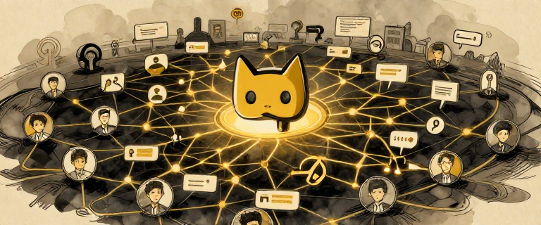
In April 2008, GitHub launched. Founded by Tom Preston-Werner, Chris Wanstrath, PJ Hyett, and Scott Chacon, GitHub wrapped Git in a web interface and added social features: pull requests (a way to propose changes to someone else's code), issue tracking, code review, and developer profiles that functioned like resumes.
GitHub turned open-source contribution from an insider activity into something anyone could do. See a bug? Fork it, fix it, submit a pull request. The entire process is transparent, documented, and public.
By 2018, when Microsoft acquired GitHub for $7.5 billion, the platform hosted over 28 million developers and 85 million repositories. It had become the de facto library of the world's code — a single place where millions of software projects could be discovered, studied, copied, and improved.
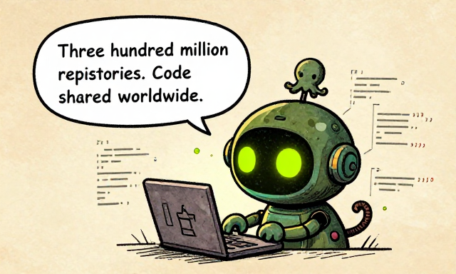
Three hundred million repos. Code shared worldwide.Big Idea: Git and GitHub solved the hardest problem in collaborative creation: how to let thousands of people edit the same thing at the same time without chaos. In doing so, they created the world's largest library of code — open, searchable, forkable. That library would soon become something no one anticipated: a training dataset for artificial intelligence.
Think About It: GitHub turned code contribution into a social activity, complete with profiles and contribution histories. How does making collaboration visible and public change the way people work? Does it encourage more participation, or does it create new kinds of pressure?
Git lives in Layer 4 of the full computing stack. Explore all 8 layers in the Full Stack Elevator -- from physics to swarms, including the web protocols and networking from this issue.
Open Full Stack Elevator →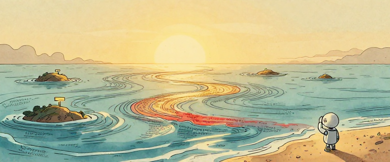
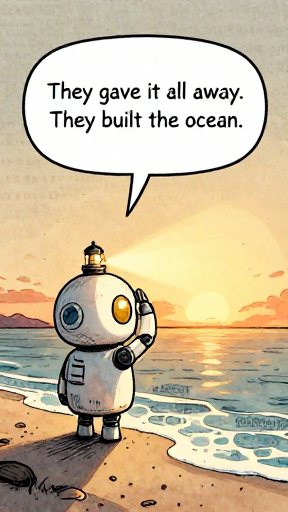
They gave it all away. They built the ocean.Look at what happened in just fifteen years.
Berners-Lee gave away the web. Torvalds gave away an operating system. Wales gave away an encyclopedia. Thousands of developers gave away their code.
Every one of them chose sharing over control, openness over ownership.
And without knowing it, they built something extraordinary: the largest collection of human knowledge and human-written code ever assembled. Billions of web pages. Hundreds of millions of repositories. The sum total of what humanity knows and builds — connected and searchable.
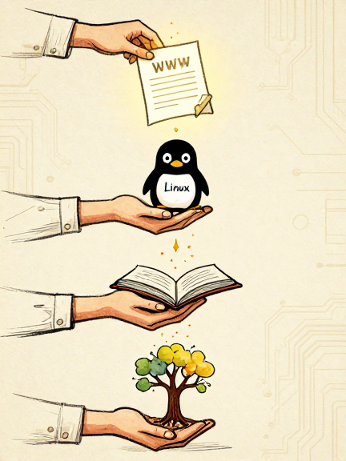
Tim Berners-Lee could have patented the web. He gave it to the world.
Linus Torvalds could have kept Linux proprietary. He released it under the GPL.
CERN could have charged licensing fees. They placed HTTP and HTML in the public domain.
Wikipedia could have been expert-only. It opened the door to everyone.
GitHub could have kept repos private by default. It made open source the norm.
The Cascade of Openness: each act of sharing enabled the next
But this story is not purely heroic. The connected world was shaped by who had access: overwhelmingly English-speaking, Western, educated, and male. The "openness" was real, but it reflected the demographics of its creators. And the cumulative result — this ocean of human-created content — would soon be used in ways those creators never imagined and never consented to.
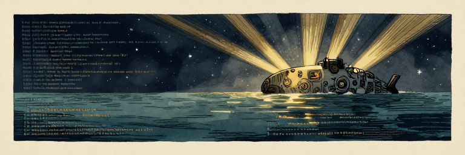
Big Idea: The connected world was built by people who chose sharing over hoarding, openness over control. In doing so, they unknowingly created something beyond any individual's imagination: the training data for artificial intelligence. The web, open source, Wikipedia, and GitHub did not just connect humanity. They created the raw material for machines that learn. Whether the creators would have consented to that use is an open question.
Think About It: Every piece of text on the web, every line of code on GitHub, every Wikipedia article was created by a human being. When an AI trains on billions of web pages, is it "learning" the same way a student learns from a textbook? Who owns the knowledge that billions of people contributed freely? Who owns the patterns a machine discovers in that knowledge? And did the people who built the open web consent to their work being used this way?
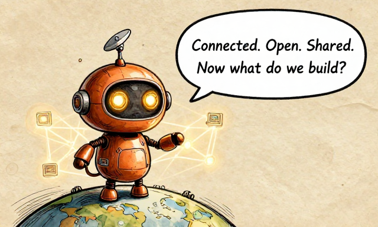
Connected. Open. Shared. Now what do we build?